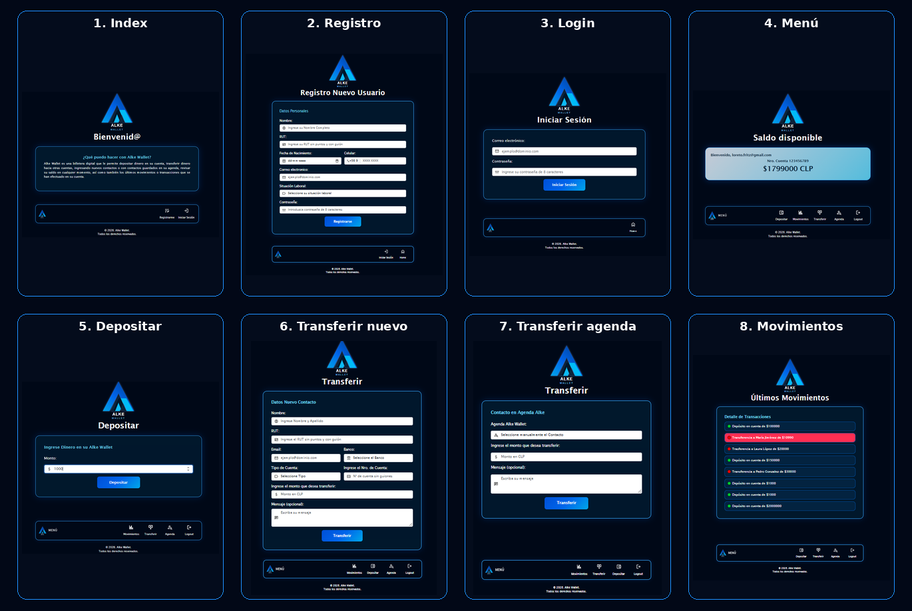
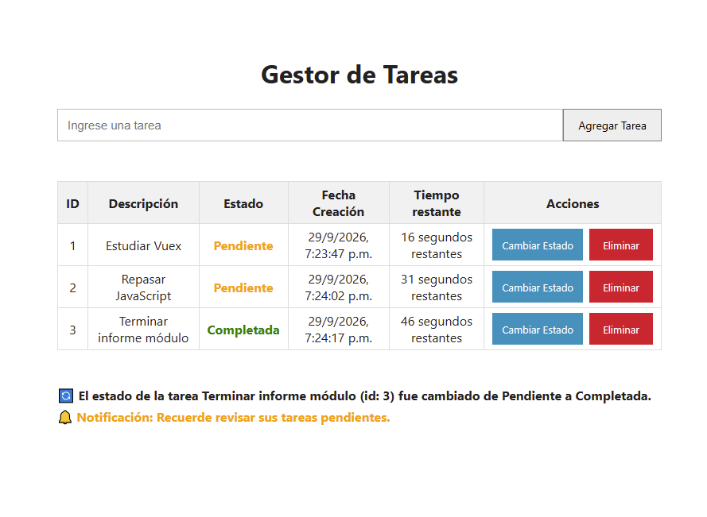
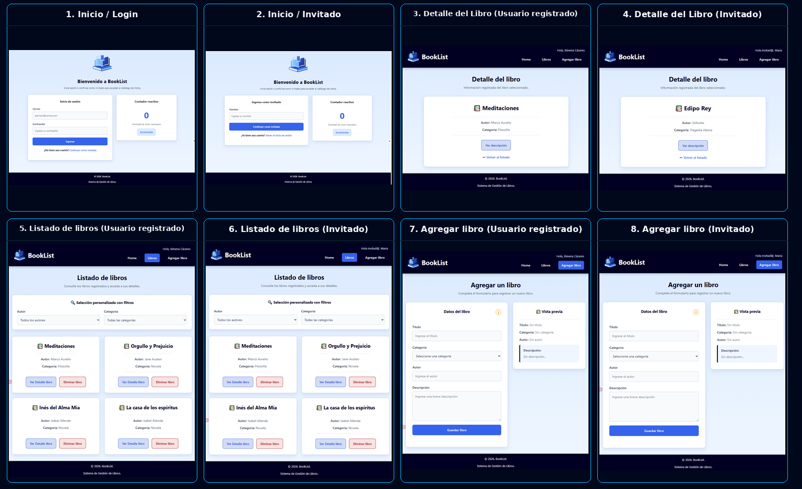
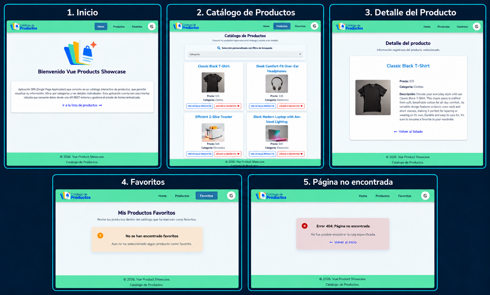

Ingeniería Comercial
Universidad Técnica Federico Santa María
2010 - 2015
Formación profesional universitaria que fortaleció competencia de análisis, gestión, planificación y resolución de problemas.
Hola, soy
Me apasiona transformar ideas en interfaces web funcionales y atractivas. Durante mi formación, he desarrollado proyectos que me han permitido avanzar desde los fundamentos del desarrollo Front End, hasta la creación de aplicaciones con Vue.
Estudié Ingeniería Comercial en la Universidad Técnica Federico Santa María, y actualmente me encuentro incursionando en una formación como desarrolladora Front End Trainee, fortaleciendo mis conocimientos a través del desarrollo de proyectos prácticos.
A lo largo de mi formación he trabajado con tecnologías como HTML, CSS, Bootstrap, JavaScript y Vue.js, avanzando desde la creación de interfaces web hasta el desarrollo de aplicaciones SPA, consumo de APIs, gestión de estado y pruebas.
Mi objetivo es continuar desarrollando mis habilidades técnicas y adquirir experiencia profesional participando en proyectos que me permitan seguir aprendiendo y aportando soluciones desde el desarrollo Front End.
Formación académica y capacitaciones que complementan mi desarrollo profesional y tecnológico.
Universidad Técnica Federico Santa María
2010 - 2015
Formación profesional universitaria que fortaleció competencia de análisis, gestión, planificación y resolución de problemas.
TOEIC Listening & Reading
2014
Nivel 3 (Escala 0 - 3+).
Certificación que evalúa habilidades de comprensión lectora y auditiva en inglés
para el lugar de trabajo o contexto académico.
SmartPro Academy
Enero 2025 - Julio 2025
Entrenamiento para aprender Excel de nivel básico a avanzado con clases en formato vídeo, prácticas y clases en vivo con casos de estudio. Total de 60 horas de formación intensiva.
Excel y Finanzas
Julio 2026
Formación complementaria orientada al uso y comprensión de herramientas de inteligencia Artificial, particularmente Copilot, ChatGPT y Claude, aplicadas a trabajo en Excel, Power BI y a aumentar la productividad laboral en general.
Talento Digital para Chile - SENCE
Mayo 2026 - En curso
Formación orientada al desarrollo Front End, incluyendo HTML, CSS, JavaScript, Vue, consumo de APIs, gestión de estado y testing.
Experiencias que han contribuido al desarrollo de mis habilidades profesionales, de gestión y organización.
Personal de Apoyo - Universidad de Talca
Marzo 2024 - Enero 2025
Participación como personal de apoyo en un proyecto ANID Desafíos Públicos, colaborando en actividades asociadas al modelo de negocios y propiedad intelectual del proyecto.
Socia y Representante Legal
Julio 2023 - Actualidad
Desarrollo de consultorías y apoyo en procesos relacionados con acreditación de Postgrados de Educación Superior y servicios profesionales del área de ingeniería.
Socia y Representante Legal
Noviembre 2017 - 2021
Gestión de una PYME dedicada a la venta online de productos para jardín, hogar y mascotas.
Tecnologías y herramientas aplicadas durante mi formación.
Una selección de proyectos desarrollados durante mi formación Front End Trainee.

Billetera digital
Aplicación web que permite realizar operaciones básicas de una billetera digital, incluyendo autenticación, depósitos, transferencias y visualización de movimientos. Incorpora validaciones para controlar los montos ingresados y evitar transferencias superiores al saldo disponible.

Gestor de tareas
Aplicación web que permite crear, visualizar, modificar el estado y eliminar tareas. Fue desarrollada aplicando programación orientada a objetos con JavaScript y utiliza LocalStorage para mantener la información, además de comunicación con una API externa mediante Fetch y programación asíncrona.

Aplicación SPA de libros
Aplicación web desarrollada con Vue 3 que permite iniciar sesión o ingresar como invitado, visualizar un listado dinámico de libros, realizar búsquedas y aplicar filtros por autor y categoría. Incluye navegación mediante Vue Router, vistas de detalle con rutas anidadas y manejo de rutas no encontradas mediante una vista de error 404.

Catálogo de productos
Aplicación SPA desarrollada con Vue3 que permite consultar un catálogo de productos obtenido desde una API REST externa (Platzi Fake Store API), filtrar productos por categoría, visualizar su detalle y administrar productos favoritos. Incorpora manejo de estados de carga y error, navegación mediante Vue Router, gestión centralizada del estado con Vuex, diseño responsive y temas claro y oscuro.
Caso de estudio
De una interfaz web a una billetera digital funcional.
Alke Wallet es una aplicación web de billetera digital desarrollada como proyecto del Módulo 2 del curso. Su objetivo fue aplicar los fundamentos del desarrollo Front End mediante la creación de una interfaz que permitiera simular operaciones habituales de una billetera digital. El proyecto cuenta con diferentes vistas para registro e inicio de sesión, menú principal, depósitos, transferencias a nuevos destinatarios o contactos de una agenda y visualización de movimientos.
El principal desafío fue pasar de desarrollar interfaces principalmente visuales a construir una aplicación con comportamiento dinámico, incorporando JavaScript para controlar las acciones realizadas por el usuario y mantener una lógica coherente entre las distintas operaciones de la billetera. Esto implicó trabajar no solamente en la presentación de la aplicación, sino también en aspectos como validar los datos ingresados, actualizar el saldo después de un depósito o transferencia, impedir operaciones con montos no válidos y registrar los movimientos realizados.
La solución consistió en desarrollar la aplicación mediante distintas vistas conectadas entre sí y utilizar JavaScript para implementar la lógica de sus funcionalidades. Se incorporaron validaciones para controlar las operaciones realizadas por el usuario, como impedir transferencias superiores al saldo disponible y evitar montos negativos. También se implementó el registro de los movimientos para que las transacciones realizadas pudieran posteriormente ser consultadas. La interfaz se desarrolló de manera responsive utilizando Bootstrap y estilos CSS personalizados, manteniendo una apariencia coherente entre las diferentes vistas.
El desarrollo de Alke Wallet me permitió comprender cómo integrar HTML, CSS y JavaScript dentro de una aplicación completa. Uno de los principales aprendizajes fue utilizar JavaScript no solamente para modificar elementos visuales, sino también para implementar lógica y validaciones relacionadas con las acciones realizadas por el usuario. También pude reforzar el manejo de eventos y del DOM, la validación de formularios, la organización de archivos y la importancia de comprobar diferentes situaciones antes de permitir una operación.
En este proyecto no se pueden utilizar métricas de usuarios reales, debido a que corresponde a una aplicación desarrollada en un contexto académico. Por este motivo, los resultados se pueden medir mediante el cumplimiento funcional de los requerimientos evaluados. La retroalimentación recibida de la evaluación destacó que se comprobó el funcionamiento correcto de las principales funcionalidades: validación de usuario y contraseña, registro de depósitos con actualización del saldo, realización de transferencias, prevención de transferencias superiores al saldo disponible, validación de montos negativos y visualización de las transacciones realizadas. Además, la evaluación también destacó positivamente la legibilidad del código, la presentación de la interfaz y el funcionamiento general del proyecto. El tiempo de resolución fue de alrededor de 4 semanas, considerando que se empezó con un trabajo paulatino, implementando los conocimientos obtenidos en cada lección del módulo de manera escalable.
Calificación obtenida: 6,3
Durante el proyecto apliqué desarrollo de interfaces con HTML y CSS, diseño responsive con CSS y Bootstrap, programación con JavaScript, manipulación del DOM, manejo de eventos, validación de datos, almacenamiento local y resolución de problemas relacionados con la lógica de una aplicación.
Seleccioné Alke Wallet porque representa una etapa importante en mi aprendizaje como desarrolladora Front End. Fue el primer proyecto en el que tuve que integrar diferentes conocimientos para construir una aplicación completa y funcional, pasando de la creación de interfaces a implementar también lógica, validaciones e interacción con el usuario. Además, el resultado de la evaluación fue positivo tanto en la presentación y legibilidad del código como en las funcionalidades principales implementadas, lo que convierte a este proyecto en una evidencia concreta de los conocimientos adquiridos durante mi formación.